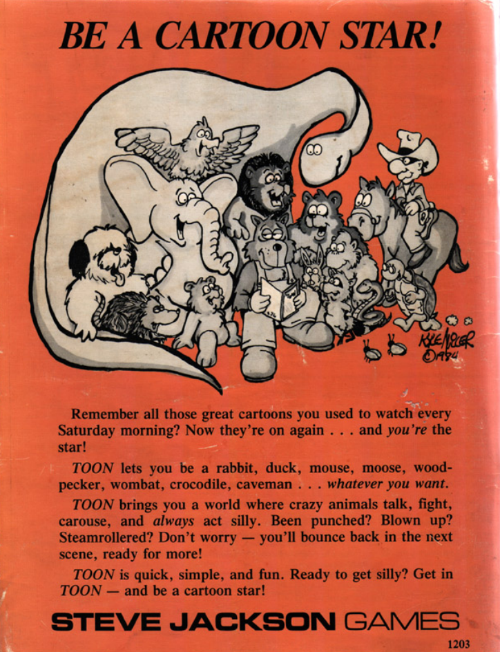

Toon is a tabletop roleplaying game originally produced by Steve Jackson Games first published in 1984. Now considered more then a little obscure, it's taken the back seat for over 30 years of tabletop gaming, and now's the perfect time to play it again!
The original summary still perfectly describes this timeless game:
Be a cartoon star!
Remember all those great cartoons you used to watch every Saturday morning? Now they're on again . . . and you're the star!
TOON lets you be a rabbit, duck, mouse, moose, wood-pecker, wombat, crocodile, caveman . . . whatever you want.
TOON brings you a world where crazy animals talk, fight, carouse, and always act silly. Been punched? Blown up? Steamrollered? Don't worry - you'll bounce back in the next scene, ready for more!
TOON is quick, simple, and fun. Ready to get silly? Get in TOON - and be a cartoon star!
STEVE JACKSON GAMES